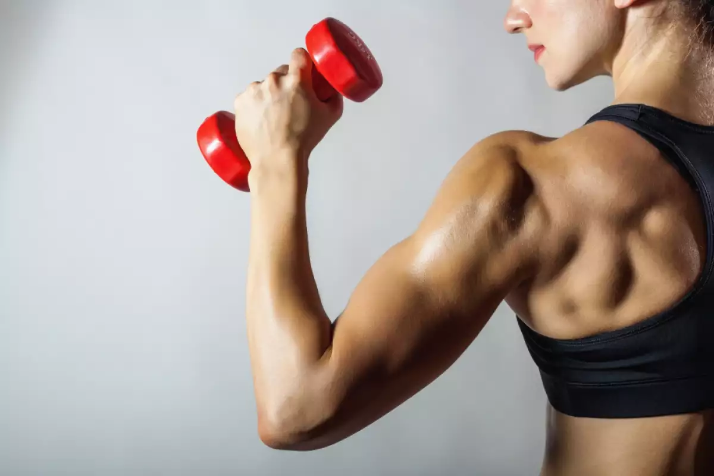

Блог Мышцы-наша молодость  Саркопения – это связанная с возрастом потеря скелетной мышечной массы и функции мышц. 21.01.23 Подробнее Тянуть или не тянуть Растяжка — это упражнения, которые разогревают мышцы и делают их более гибкими. 22.01.23 Подробнее Бег зимой Бег зимой закаляет. 23.01.23 Подробнее